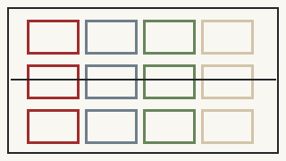

百年京张 AI 创新带开源征集 · Concept v0.2
京张人民智城
AI向前，人民在先。 人民是城市与人工智能治理的主体，AI是可解释、可选择、可拒绝、可人工接管、可撤回的公共工具。
让技术的线，最终汇入人民的空间。

首屏证据：人民性已经变成设计合同
3
重点区域12
AI场景9
验收人群5
人民AI权利2
红色公共锚点3
AI朝圣地标6
全球机制案例4
长期活动品牌0
AI最终公共决定空间不是AI展柜


普通服务先于智能服务

BASELINE → AI PILOT → HUMAN REVIEW → PUBLIC RECEIPT → SCALE / REVISE / STOP
12/12 场景必须保留人工或非AI等价路径。AI可以辅助，但不独立作出影响权益、资格、安全、支付、通行、执法或公共资源的最终决定。
两红锚、三地标
人民工程馆
全带唯一大型红色公共地标：人民工程史、人民AI议事厅、公共算法审议室、开源城市工坊。
人民AI服务站
小尺度、可复制，不算“朝圣地标”：人工、无账号、纸质/实体凭证、无障碍、复核、申诉、饮水与休息。
开源原点广场
屏幕全部关闭时仍是一座好广场；开源工具、贡献记录、社区原型和失败复盘进入真实公共空间。
公共智能廊
展示公共AI接口时同步说明责任主体、数据边界、AI不能做什么、怎样不用AI完成同一件事。
状态与事实边界
总体范围与三处重点区均继承仓库维护者 provisional geometry；新增用地、道路、建筑、绿地、公共空间和场景节点均为低置信度概念设计，不构成法定规划、地籍、权属、文保、道路红线、审批或工程定位。v0.2 尚未运行仓库完整 formal self-check，因此不得描述为正式评审就绪。